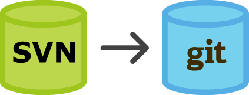
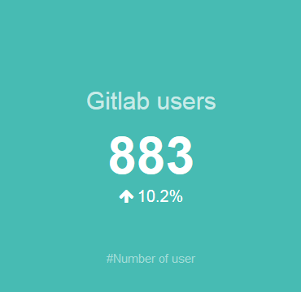
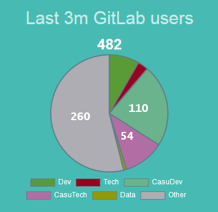
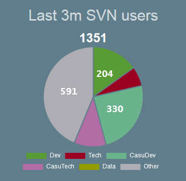
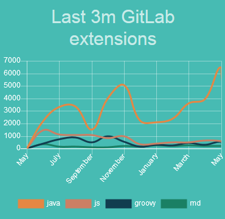
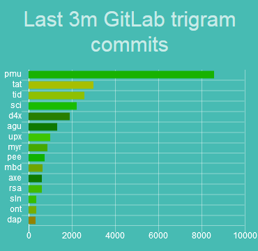

Mission complexe
Comment mon apprentissage me confronte à une mission complexe
Emilien Mottet alternant ENSIMAG/MICHELIN
Migration SVN vers Gitlab

Les moyens mis en oeuvre
- Une équipe de 3
- De la formation
- Un service
les premiers résultats



Décommission de SVN septembre 2018
Ma contribution technique


Complexité technique
- Challenge technique
- L'environnement Michelin (Sécu,UX,...)
Complexité humaine
- L'humain face aux changements
- Une masse à faire changer
- Un héritage parfois lourd
Complexité économique
- Un budget à respect
- Des dépenses à prévoir et organiser
Complexité organisationnel
- Une hierarchie à convaincre/former
- Une organistion à l'échelle mondiale
Comment (ré)agir face à cette complexité
Ma contribution
- Ma contribution technique
- Mon déplacement aux États-Unis
Les compétences :
- La communication
- La détermination
- La maitrise technique
- La précision des réponses
Questions
Merci de votre attention